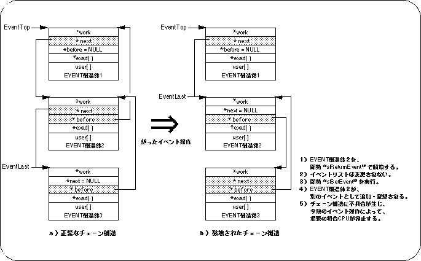

Return to previous page | Return to menu | Go to next page
10-5. Notes on event processing
When performing event processing, pay particular attention to returning and releasing various areas to the system. This is caused by not checking whether the area pointed to by the parameter specified by the function to be operated is the kind of area that the function should handle during return / release operations.
For example, if you use the library function “slReturnEvent” to execute the return / release operation of the extended user area, if you accidentally return / release the area registered as a normal event, the following adverse effects It is possible that the CPU will stop in the worst case.
- Return of area
The EVENT structure specified by the function “slReturnEvent” is returned to the system.
- Event list
Since the EVENT structure is not released as an event, it continues to exist in the event list.
- New event registration
Since the area is in a free state in terms of system, it can be freely used by using a function “slSetEvent” or the like.
- Chain structure conflict
Although it is registered in the event list, the area is in a free state, so the contents of the EVENT structure are rewritten,
This causes problems in the chain structure.
- CPU stop
The chain structure becomes inconsistent, and in the worst case, the CPU stops.
Figure 10-15 Incorrect event operation

Return to previous page | Return to menu | Go to next page